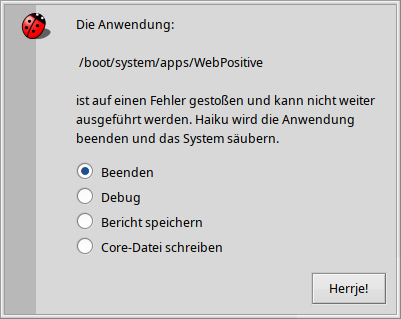

Debugger
Debugger
| Deskbar: | ||
| Ort: | /boot/system/apps/Debugger | |
| Einstellungen: | ~/config/settings/Debugger settings ~/config/settings/Debugger/ |
Mit dem Debugger hat der gemeine Benutzer normalerweise nicht viel zu tun. Er ist für Entwickler gedacht, um Bugs in Programmen zu untersuchen. Diese Bugs können manchmal zu Abstürzen führen, und dann kommt auch der Endbenutzer in Kontakt mit dem Debugger. Wenn ein Programm abstürzt, erscheint ein Fenster mit folgenden Optionen:
Es bietet vier Möglichkeiten auf den Absturz zu reagieren:
macht nichts weiter als die Überreste der abgestürzten Anwendung zu entfernen.
startet den Debugger für weiterführende Untersuchungen.
erzeugt einen Debugbericht der als Textdatei auf dem Desktop gespeichert wird. Der Bericht kann dann an den Entwickler der abgestürzten Anwendung gemailt oder an ein Ticket des Bugtrackers der Anwendung gehangen werden.
Der Debugbericht enthält Angaben zur Hardware (CPU-Typ und Speichernutzung usw.), die genaue Haiku Version und andere Systeminformationen, die mit dem Absturz zusammenhängen könnten.erzeugt eine unter Umständen sehr große Datei, die den Zustand des kompletten Systems beschreibt. Man sollte besser erstmal einen normalen Bericht an einen Bugreport hängen und eine Core-Datei nur auf Wunsch des Entwicklers.
Welche Standard-Aktion bei einem Crash ausgeführt wird, kann mit der Textdatei ~/config/settings/system/debug_server/settings konfiguriert werden.
Die Datei verwendet den 'driver_settings' Stil:
default_action user
executable_actions {
app1 log
/path/app2* debug
}
Gültige Werte für 'default_action' sind:
| user | Beim Benutzer nachfragen was zu tun ist. | |
| kill | Das crashende Team wird still und leise beendet. | |
| debug | Das crashende Team wird im Debugger untersucht. | |
| log / report | Speichert einen Crash-Bericht und beendet das Team. | |
| core | Speichert eine (evtl. sehr große) Core-Datei und beendet das Team. |
Ohne eine 'default_action' wird die 'user' Einstellung benutzt.
Mit dem Block 'executable_actions' lässt sich die 'default_action' für bestimmte Teams/Anwendungen aushebeln. Das Format ist wie oben beschrieben, wobei die einzelnen Zeilen aus einem Team-Namen oder einem Pfad bestehen können (inkl. Platzhaltern).
Die Benutzung des eigentlichen Debuggers würde den Rahmen dieses Userguides sprengen, der sich ja an die Bedürfnisse des Endbenutzers richtet. Der Vollständigkeit halber, hier das Debugger Fenster das erscheint, wählt man die Option aus dem ersten Screenshot:

Wie man schnell sieht wenn man den Debugger ein bisschen erkundet, handelt es sich um eine der komplexesten und ausgereiftesten Anwendungen für Haiku. Ein Entwickler, der bereits mit grafischen Debuggern anderer Plattformen vertraut ist, wird viele Features bestimmt wiedererkennen.
Unten einige Links, die einige Details des Debuggers beleuchten. Spezifische Fragen können auf der (englischen) Development Mailingliste gestellt werden. Wer weitere nützliche Ressourcen findet, möchte diese bitte per Bugreport mitteilen.
| Debugger Reference Manual | Das (englische) Reference Manual ist die bisher detallierteste Beschreibung des Debuggers. | |
| Blogposts | Es existieren einige Artikel über den Debugger, meist von Rene Gollent geschrieben, nachdem er ein neues Feature implementiert hat. | |
| BeGeistert 026 Video | Aufgenommen auf dem BeGeistert Treffen im Jahre 2012, demonstriert Ingo Weinhold den damaligen Stand des Debuggers und zeigt einige interessante Werkzeuge wie den Profiler, um Flaschenhälse im Code zu identifizieren. |